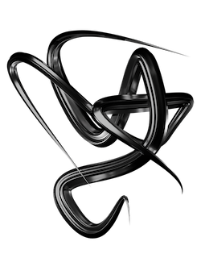
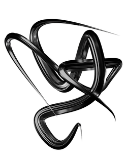

Cactus Jack
 
A collective made by Travis Scott. While the collective as a whole has had a gradual change in its aesthetic in recent times, the simplicity and gritty feel their work has can be seen and heard wherever they decide to collaborate or create. They have a website that showcases the newest releases for any of the members.
Pharrell
Pharrell Williams is one of my main inspirations for art, fashion, and music because of how versatile he is across many industries. Currently delving into film and fashion, Pharrell is constantly expanding his portfolio while keeping his minimalism aesthetic consistent wherever he works. He has a very simplistic website where he showcases his most recent original work, and I believe it sums up what he represents visually very well.
Veilside

A company that designs body kits or visual enhancements for sports cars. This company is based in Japan and is known for its complex yet clean designs that remain consistent in every car they work on. The aerodynamic design all the vehicles convey is something I admire and aim to be able to use for my designs in some shape or form. They have a website that is used for ordering these body kits or having them installed for you in Japan as well as a portfolio showcasing their previous work